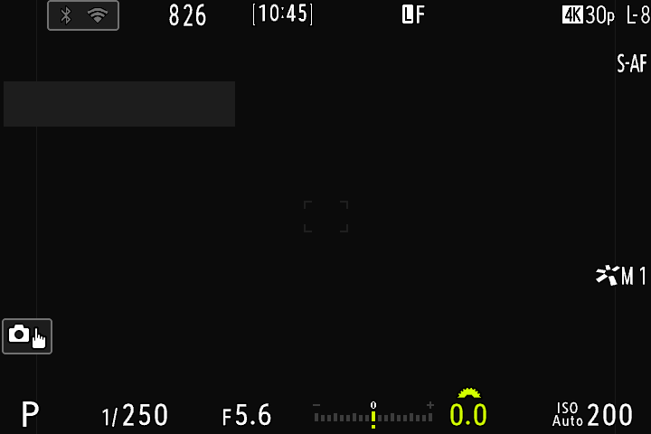
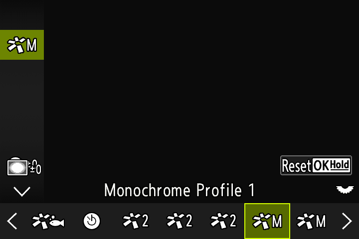

Experimental firmware for the OM-5 Mark II
Your colour.
Your looks.
Three look slots. Twelve colours to shape. One file to carry your favourite looks. Caduceus restores the hidden Color Profiles and adds Hue, Lightness, tone controls and Live ND64.


New in alpha9 Emulator only
The Picture Mode screen, drawn in full.
Alpha8 booted on the owner’s camera with a few display gaps. Alpha9 fills them: the colour wheel and tone curve are drawn on the screen, every profile has its own numbered icon, and the icon stays on the shooting screen after you change a profile. Alpha9 has not been run on a camera yet.



What’s added
Six Picture Modes, and Live ND to ND64.
On the OM-5 Mark II: six entries in Picture Mode, after Color Creator, and Live ND32 / ND64.
| Color Profile 1–3 | Monochrome Profile 1–3 | |
|---|---|---|
Looks from LOOKS.BIN (trash button steps through them) | Yes | No |
| Hue, Saturation, Lightness for 12 colours | Yes | No |
| Tone curve (Shadows, Midtones, Highlights) | Yes | Yes |
| Sharpness, Contrast, Shading | Yes | Yes |
| Own white balance, remembered per profile | Yes | No |
| Colour filter, toning, grain | No | Yes |
| Name shown on the Picture Mode screen and super control panel | The look's name | OM's name |
Live ND32 and ND64 appear after ND16 in the camera’s Live ND setting.
How to use looks
- Make up to ten looks in LookLab (or use the ten starter looks) and copy
LOOKS.BINinto a folderOM5MODat the top of the card. - Switch on and half-press the shutter button once. The camera reads the file then (once per switch-on).
- Press OK, go to Picture Mode and move along the strip to Color Profile 1, 2 or 3 (after Color Creator).
- Press the trash button: the slot loads the first look and its name becomes the title. Press again for the next look; after the last it starts again. Each slot keeps its own look.
- Press down to fine-tune the look: the colour wheel (in it, the trash button switches Saturation / Hue / Lightness), tone curve, Shading, Sharpness and Contrast.
- Shoot. The look is stored in the camera: it stays after switching off, with no card, and goes into custom modes C1–C4.
In the Monochrome Profiles the trash button does nothing; they are OM’s own monochrome profiles, brought back.
All controls →How to install
- Check the camera is an OM-5 Mark II on firmware 1.1 and read the safety notes.
- Download this project and double-click the launcher for Mac or Windows. It downloads OM's official firmware, adds Caduceus and checks the result.
- Copy the
DCOLYMPandOM5MODfolders to the card. Keeprestore: it is OM's own firmware, to go back. - Camera off, hold OK, switch on, and wait for the light to blink.
The installer makes alpha9. To make alpha8, the last build confirmed on a camera: python3 patch.py --release v0.1.0-alpha8.
How it works
From a browser to the camera.
01 / Make a look
A small library. One file.
Choose from 67 film-inspired starting points in LookLab, or make your own. Save up to ten in LOOKS.BIN, in the card’s OM5MOD folder. The preview is an approximation using OM-3 colour measurements.
02 / Choose a look
Three slots to make your own.
Half-press once after starting. Open Picture Mode and select Color Profile 1, 2 or 3. The trash button steps that slot through the looks. Its values and name go into the slot’s settings.
The title changes to the look’s name on each press, and the super control panel shows it while the Picture Mode cell is highlighted. Both name displays worked on the owner’s camera with alpha8.

03 / Fine-tune the colour
Beyond saturation.
Inside the colour wheel, the trash button cycles Saturation, Hue and Lightness. Adjust one colour or all twelve. Add a tone curve, contrast, sharpness, shading and a white-balance shift.
A chosen look is stored as settings: the design needs the card only to choose another. Persistence and JPEG output still need physical-camera verification.

04 / Shape the light
Keep the essentials.
Control Shadows, Midtones and Highlights independently. Monochrome Profile 1–3 are also restored, and the Live ND menu extends to ND32 and ND64.
Real exposures, hardware behaviour and colour output remain unverified. Extra effects such as Glow and Halation are deferred.
Compared with the OM-3
What fits in the OM-5?
The Mark II has much less free firmware space than the OM-3. This port focuses on looks and colour controls.
| Feature | OM-3 | OM-5 Mark II |
|---|---|---|
| Look selection | 20 dedicated FILM entries | 3 Color Profile slots; up to 10 looks per file |
| Look names | Title, quick menu, shooting screen | Picture Mode title and super control panel, up to 12 characters |
| HSL, tone, WB shift | Yes | Yes |
| Extra effects / recipe in EXIF | Yes | Not implemented |
| Tested on a camera | Separate upstream project | Alpha8 boot confirmed Alpha9 not yet |
Follow the experiment
OM-5 Mark II (E148, firmware 1.1) comes first. Alpha8 booted on the owner’s camera; alpha9 adds display fixes and waits for its first camera check.
Roadmap →Own an original OM-5?
A pre-alpha for the original OM-5 (2022, firmware 1.2) puts the whole Mark II program with Caduceus into the OM-5’s update file. It has never run on any camera, and nobody knows whether an OM-5 can be recovered if it fails. If you accept that risk, can use a terminal, and want to help, the tester page explains how to build it, a careful order of first steps, and how to report what happens.
Original OM-5 pre-alpha: for testers →Credits
Built on the work of others.
Thank you to the authors of the three projects this one stands on:
fishcu/oly_fw_analysis
By fishcu: the Olympus firmware research that showed how these cameras’ firmware can be read, changed and rebuilt. The OM-5 Mark II work began in a fork of it.
cakelesscoder/caduceus-ep7
By cakelesscoder: Caduceus itself, for the PEN E-P7, and the idea of looks loaded from the card.
androidfanman/caduceus-om3
By androidfanman: Caduceus for the OM-3, its looks and LookLab, and the design of this site.
Details
Licences and attributions are in the NOTICE file.